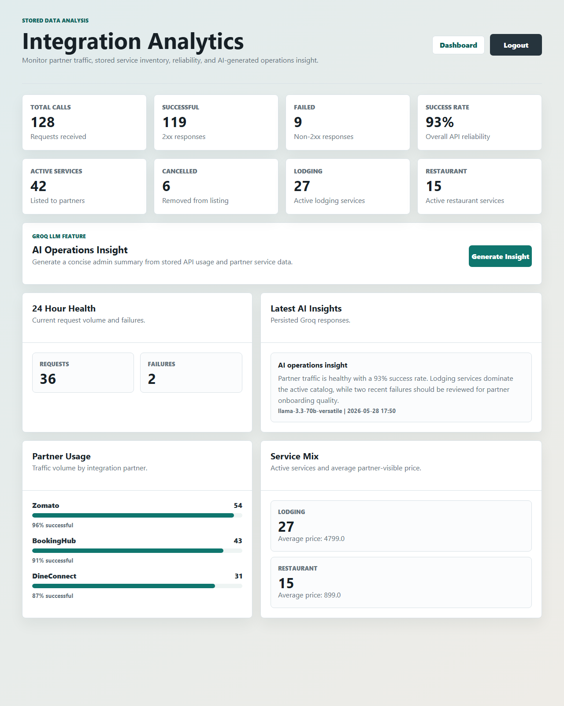

Application: Lodgings and Restaurant Management
Feature: Admin analytics dashboard for stored partner API and partner service data.
The dashboard is available to admin users at /api-dashboard. The screenshot below shows the implemented layout with representative stored data.

The dashboard helps administrators understand how third-party integrations are using the application and what partner-visible services are currently stored. It analyzes data already persisted in the application's database rather than relying on hard-coded values.
| Dashboard Area | Data Source | Explanation |
|---|---|---|
| API overview cards | api_usage_logs | Total calls, successful calls, failed calls, and success rate are calculated from stored API log rows. |
| Stored service overview | partner_services | Shows active services, cancelled services, active lodging records, and active restaurant records. |
| 24 hour health | api_usage_logs.requested_at | Counts recent traffic and failures during the last 24 hours. |
| Endpoint usage | api_usage_logs.endpoint, method, successful | Groups API requests by endpoint and HTTP method. |
| Partner usage | api_usage_logs.partner_name | Groups traffic by partner and renders a success-rate bar. |
| Service mix | partner_services.service_type, price | Groups active services by type and calculates average price. |
| Recent services and requests | partner_services, api_usage_logs | Shows the latest stored records for operational review. |
The dashboard route is implemented in ApiDashboardController. It queries repositories, computes success-rate percentages, and places the resulting values into the Thymeleaf model.
The repository layer was extended with aggregate methods and JPQL projection queries:
ApiUsageLogRepository: total, 24-hour counts, endpoint summaries, and partner summaries.PartnerServiceRepository: active/cancelled counts, service type counts, recent services, and active service type price summary.EndpointUsageSummary, PartnerUsageSummary, and ServiceTypeSummary: typed projection records for dashboard data.The UI is implemented in src/main/resources/templates/api-dashboard.html and styled through src/main/resources/static/css/auth.css. The page uses responsive grids, summary cards, tables, and bar indicators so it remains usable on desktop and mobile screens.
The dashboard is protected in SecurityConfig with .requestMatchers("/api-dashboard").hasRole("ADMIN"). Normal users can continue to use the general dashboard, while only admins can view integration analytics.
The project test suite was run with ./gradlew.bat test and completed successfully after implementation.